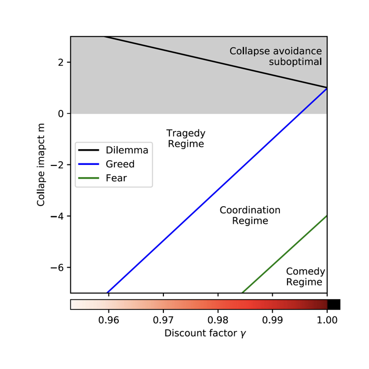
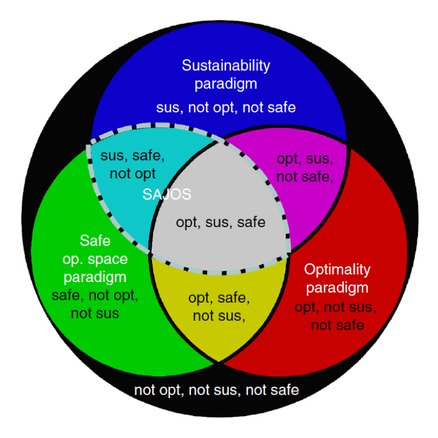
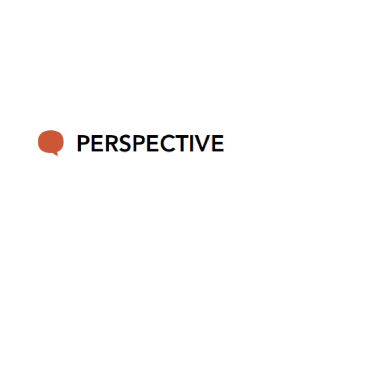

Table of Contents
Research
We reshape human-environment modeling to identify critical leverage points for sustainability transitions.
Cooperation at scale – in which large collectives of intelligent actors in complex environments seek ways to improve their joint well-being – is critical for a sustainable future, yet unresolved.
To move forward with this challenge, we develop a mathematical framework of collective learning, bridging ideas from complex systems science, multi-agent reinforcement learning, and social-ecological resilience.
Selected publications

Caring for the future can turn tragedy into comedy for long-term collective action under risk of collapse
by Barfuss W, Donges JF, Vasconcelos VV, Kurths J, Levin SA
in Proc. Natl. Acad. Sci. U.S.A., 117(23), 12915-12922 (2020)
doi
code
zenodo
We show how caring for the future can transform a tragedy of the commons into a comedy even without any form of social reciprocity.

When optimization for governing human-environment tipping elements is neither sustainable nor safe
by Barfuss W, Donges JF, Lade SJ, Kurths J
in Nature Communications 9, 2354 (2018)
doi
code
zenodo
We show that no master paradigm exist within the decision paradigms of optimization, sustainability and safety for the governance of a human-environmental tipping element.

Stewardship of global collective behavior
by Bak-Coleman J, Alfano M, Barfuss W, Bergstrom C, Centeno MA, Couzin ID, Donges JF, Galesic M, Gersick AS, Jacquet J, Kao A, Moran RE, Romanczuk P, Rubenstein DI, Tombak KJ, Van Bavel JJ, Weber EU
in Proc. Natl. Acad. Sci. U.S.A., 118(27), e2025764118 (2021)
doi
interview
We argue that the study of collective behavior must rise to a “crisis discipline” just as medicine, conservation, and climate science have, with a focus on providing actionable insight to policymakers and regulators for the stewardship of social systems.